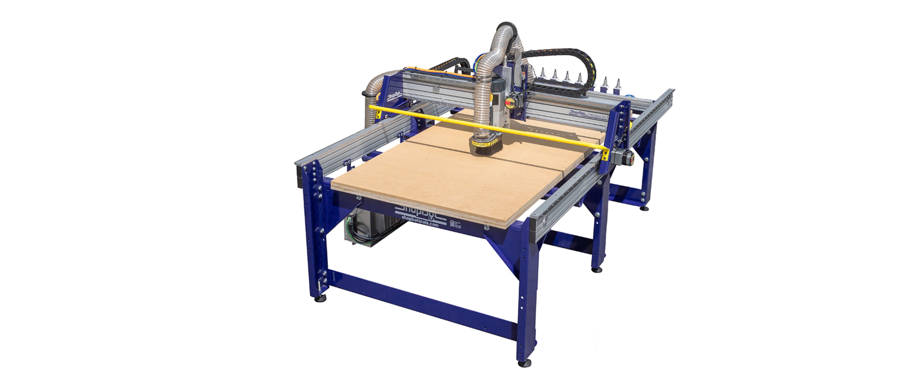

Búnaður/Leiðbeiningar
Leiðbeiningar á GitHub
Hér má finna samansafn leiðbeininga á GitHub.
Efnið er í vinnslu.
Þrívíddarprentarar
Prusa MK3S+
Fab Lab Akureyri er með þrjá Prusa MK3S+ prentara.
Stór fræsibekkur
ShopBot

Stóri fræsinn okkar. Hentar vel til fræsingar í allar gerðir af viði, plasti, frauði, expoxy og ál.
Litlir fræsarar
Wegstr
Nettir og þægilegir fræsarar sem henta einstaklega vel fyrir rafrásagerð.
Laserskurður
Epilog
Tvær laserskurðarvélar, 40W og 60W. Með þeim er hægt að skera og merkja margskonar efni. Vélarnar skera og merkja MDF, krossvið, leður, akrýlplast(plexýgler). Einnig merkja þær í gler, stein og á málma.
Stafræn útsaumsvél
Husqvarna
Tölvustýrð útsaumsvél sem á auðvelt með að sauma í öll helstu fataefni. Vélin virkar einnig sem hefðbundin saumavél.
Vínylskeri
Roland
Skemmtilegur vínylskeri sem getur skorið út bæði hefðbundna límmiða, sandblástursfilmur og fatafilmur. Fatafilmurnar er hægt að líma við föt með hitapressu.
Hitapressun
Secabo C5
Hitapressa til að merkja föt
Vacuum formun
Mayku Multiplier
Nýjasta græjan á svæðinu! Hægt að búa til mót úr plastefnum og sílikoni.
Annar búnaður
Auk þeirra ofantalinna tækja, er smiðjan útbúið öllum helstu tækjum og verkfærum sem þarf til margskonar verka, svo sem:
- Almenn handverkfæri eins og skrúfjárn, hamar, dúkahnífar, tangir og þjalir.
- Stillanlegir spennugjafar
- Sveiflusjá
- Lóðboltar, tin og tinsugur.